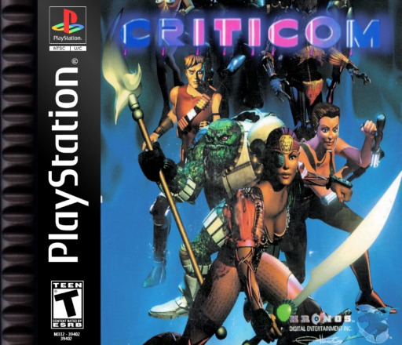
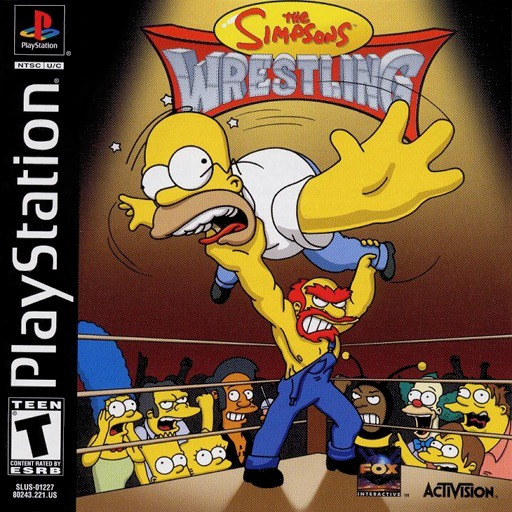
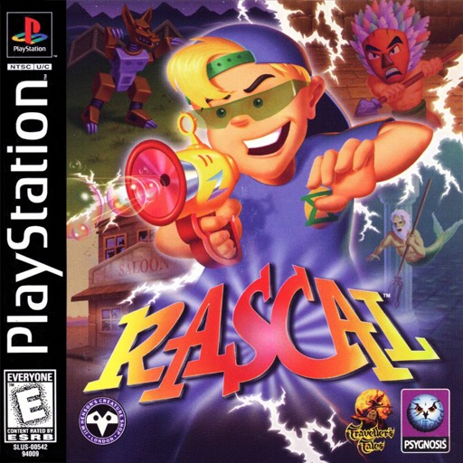
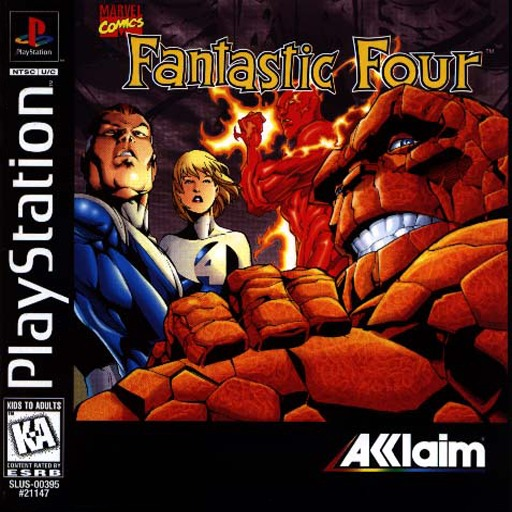
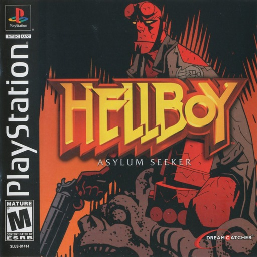
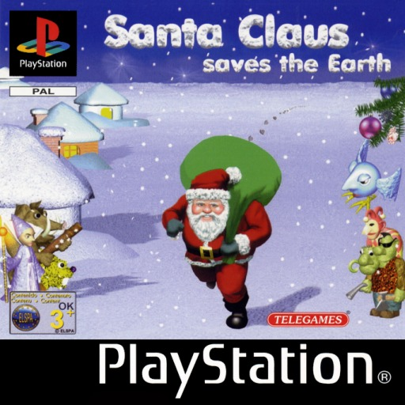
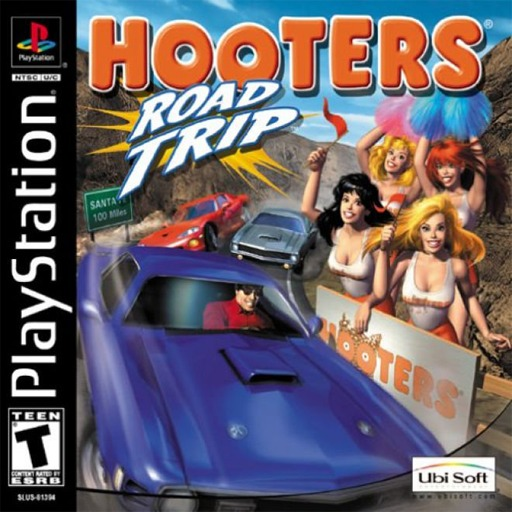
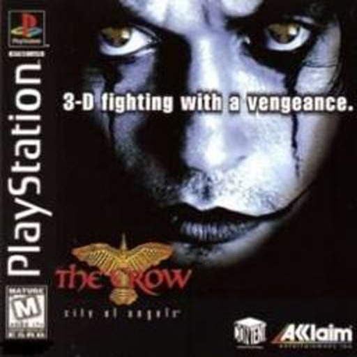
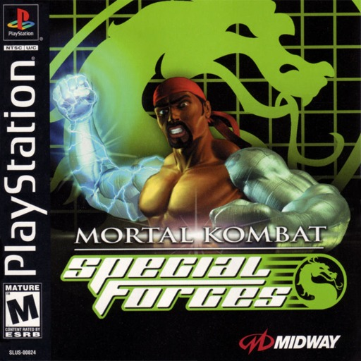
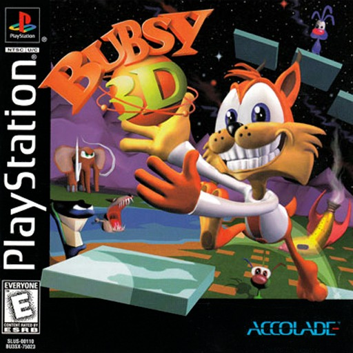

Contamos en cuantas listas de peores aparece cada juego (Den of Geek, TheGamer, WatchMojo, SVG, EGM, The Guardian y mas), sumamos la leyenda de cada cartucho... perdon, CD, y dejamos afuera lo que ya esta en nuestro Top Mundial. Solo juegos con licencia Sony y venta normal.
03
#10
EN 2 LISTAS

PS1
TARROVISIONCH 10
NO SIGNAL
Inserta gameplay aqui
CRITICOM
PS1 · 1995 · VIC TOKAI (DEV. KRONOS) · DEN OF GEEK (#6) + SVG (#3)
▶ PREMIO AL GOLPE QUE LLEGA CUANDO LA PELEA YA TERMINOUno de los primeros juegos de pelea en 3D del PlayStation: ocho guerreros galacticos peleando por un cristal, en plataformas redondas. Den of Geek y SVG dicen que los controles responden con retraso. Next Generation: el frame rate entrecortado arruina la jugabilidad.
04
#9
EN 2 LISTAS

PS1
TARROVISIONCH 09
NO SIGNAL
Inserta gameplay aqui
THE SIMPSONS WRESTLING
PS1 · 2001 · ACTIVISION (DEV. BIG APE) · DEN OF GEEK (#11) + WATCHMOJO (#9)
▶ PREMIO A LA LUCHA LIBRE SIN LUCHAVeinte personajes de Springfield peleando a golpes, sin lucha libre de verdad. IGN le puso 1 de 10 y un critico lo llamo la demolicion mas horrible de una licencia. Segun Wikipedia, hasta el creador de la serie saco su nombre de la caja.
05
#8
EN 2 LISTAS

PS1
TARROVISIONCH 08
NO SIGNAL
Inserta gameplay aqui
RASCAL
PS1 · 1998 · PSYGNOSIS (DEV. TRAVELLER'S TALES) · DEN OF GEEK (#5) + WATCHMOJO (#7)
▶ PREMIO AL VIAJE EN EL TIEMPO CON CONTROLES DE TANQUEUn nino con una pistola de burbujas viaja por el tiempo para rescatar a su papa, en cinco mundos con pasado, presente y futuro. Se controla como un tanque. EGM lo llamo 'una de las peores experiencias de plataformas en 3D hasta ahora'.
06
#7
EN 2 LISTAS

PS1
TARROVISIONCH 07
NO SIGNAL
Inserta gameplay aqui
FANTASTIC FOUR
PS1 · 1997 · ACCLAIM (DEV. PROBE) · DEN OF GEEK (#12) + WATCHMOJO (#6)
▶ PREMIO AL JUEGO DE AUTITOS EN LA PANTALLA DE CARGAUn beat 'em up para 4 jugadores con Mr. Fantastico, la Mujer Invisible, la Mole, la Antorcha Humana y She-Hulk. Mientras carga te dejan jugar a unos autitos. IGN le puso 1 de 10 y EGM lo premio como 'el peor uso de una buena licencia'.
07
#6
EN 2 LISTAS

PS1
TARROVISIONCH 06
NO SIGNAL
Inserta gameplay aqui
HELLBOY: ASYLUM SEEKER
PS1 · 2003 · DREAMCATCHER (DEV. HOPLITE RESEARCH) · DEN OF GEEK (#2) + WATCHMOJO (#8)
▶ PREMIO AL DEMONIO SIN PODERESUn Hellboy que casi no pelea: te toca resolver puzzles en seis niveles, como un demonio de oficina. Salio en el PlayStation tres anos despues de que saliera el PlayStation 2. La revista oficial le puso 0,5 de 5.
08
#5
EN 2 LISTAS

PS1
TARROVISIONCH 05
NO SIGNAL
Inserta gameplay aqui
SANTA CLAUS SAVES THE EARTH
PS1 · 2002 · TELEGAMES (DEV. IVOLGAMUS) · DEN OF GEEK (#8) + WATCHMOJO (#3)
▶ PREMIO AL REGALO QUE NADIE QUISO ABRIRUn hada malvada llamada Nilam atrapa a Santa en tierras magicas, y lo guias por 15 etapas lanzando bolas de nieve, dulces y tomates. Den of Geek lo llama un dolor para los ojos, con fisica rara y golpes que casi no funcionan.
09
#4
EN 3 LISTAS

PS1
TARROVISIONCH 04
NO SIGNAL
Inserta gameplay aqui
HOOTERS ROAD TRIP
PS1 · 2002 · UBI SOFT (DEV. HOPLITE RESEARCH) · DEN OF GEEK (#10) + THEGAMER (#12) + GAMESRADAR (#49)
▶ PREMIO AL ANUNCIO CON VOLANTEEra un juego de carreras llamado Free Wheelin' USA hasta que le pusieron la marca encima: un anuncio con volante, con videos de las meseras entre carrera y carrera. Game Informer lo llamo uno de los peores juegos jamas hechos.
10
#3
EN 3 LISTAS

PS1
TARROVISIONCH 03
NO SIGNAL
Inserta gameplay aqui
THE CROW: CITY OF ANGELS
PS1 · 1997 · ACCLAIM (DEV. GRAY MATTER) · DEN OF GEEK (#1) + SVG (#1) + GAMESRADAR 2014
▶ PREMIO AL PERSONAJE QUE NO SABE HACIA DONDE MIRADen of Geek y SVG lo ponen primero entre los peores del PlayStation. SVG dice que cuesta hasta lograr que el personaje mire en la direccion correcta. IGN le puso 1 de 10. Lo unico que se salva: los fondos, oscuros y lindos.
11
#2
EN 4 LISTAS

PS1
TARROVISIONCH 02
NO SIGNAL
Inserta gameplay aqui
MORTAL KOMBAT: SPECIAL FORCES
PS1 · 2000 · MIDWAY · DEN OF GEEK (#7) + THEGAMER (#11) + WATCHMOJO (#5) + SVG (#5)
▶ PREMIO AL MORTAL KOMBAT SIN SALTO NI SONYAJax persigue a Kano para evitar que se lleve un artefacto, pero el juego es buscar tarjetas llave por edificios iguales. No puedes saltar, y Sonya Blade, que iba a ser jugable, quedo fuera. Daily Radar le puso 0 de 10.
12
#1
EN 6 LISTAS

PS1
TARROVISIONCH 01
NO SIGNAL
Inserta gameplay aqui
BUBSY 3D
PS1 · 1996 · ACCOLADE (DEV. EIDETIC) · DEN OF GEEK (#3) + WATCHMOJO (#1) + SVG (#2) + EGM + THE GUARDIAN + GAMETRAILERS (#8)
▶ PREMIO AL GATO QUE SE ENCONTRO CON MARIO 64 EN EL CAMINOSalio con controles de tanque y una camara que desorienta, justo despues de Super Mario 64 y Crash Bandicoot. Aparece en 6 listas de peores. Su propio creador lo llamo su mayor fracaso, y la serie tardo 21 anos en volver.
13
ANALISIS DEL TOP
EL FINAL DE LA FIESTA DEL PLAYSTATION
Cuatro de los diez salieron con el PlayStation 2 ya en las tiendas (Simpsons Wrestling, Hooters Road Trip, Santa Claus y Hellboy), y seis son licencias de comics, peliculas, series, una marca de restaurantes o una saga de peleas. Acclaim aparece dos veces (Fantastic Four y The Crow) y tambien el estudio Hoplite Research (Hooters y Hellboy).
14
GAME OVER
INSERTA MONEDA PARA CONTINUAR
Coco cierra tocando el tema de Game Over en bateria. ¿Cual fue el peor CD de PlayStation que les toco jugar? Cuentanos en los comentarios y cual consola quieren que siga.